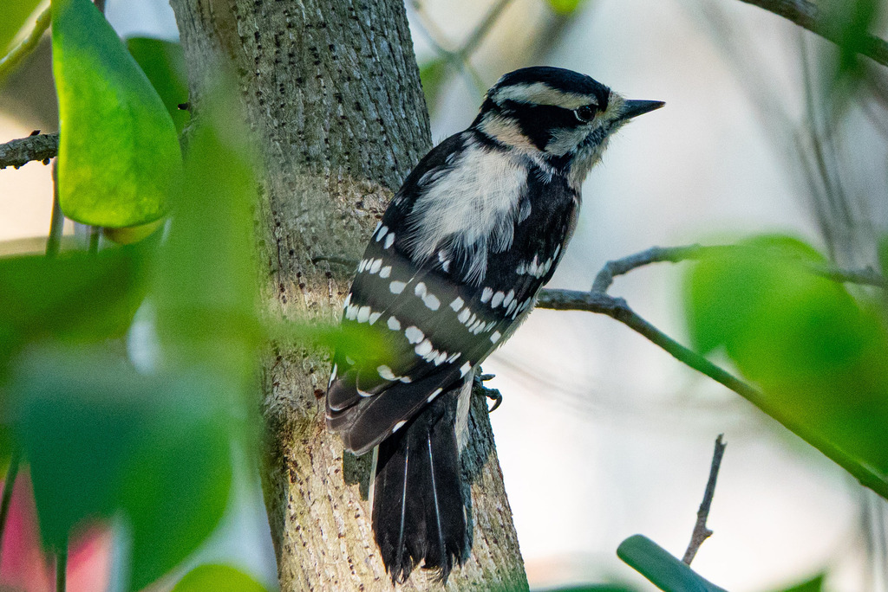

📷 Photo by Rob Carr · CC-BY-NC · via iNaturalist · 📅 Nov 14, 2025
Quick Hits
- The smallest woodpecker in North America — barely bigger than a sparrow, with a stubby bill and a black-and-white pattern that looks like a shrunken version of the hairy woodpecker.
- Males wear a small red patch on the back of the head; females have none.
- It readily joins mixed flocks of chickadees, titmice, and nuthatches working through the trees in winter.
- Its small size lets it forage on thinner branches and weed stems that larger woodpeckers cannot use.
How to Spot It
Size
About 6 inches — the smallest North American woodpecker.
Bill
Short and stubby, noticeably smaller than the similar hairy woodpecker's.
Pattern
Black-and-white with a white back stripe; male has a small red nape patch.
Behavior
Forages on thin branches and weed stems, often acrobatically.
Voice
A high, sharp 'pik' call and a descending whinny rattle.
What to Look For
A very small black-and-white woodpecker with a short bill, hitching along branches or clinging to thin stems.
What It Eats
Insects, insect larvae, seeds, and suet. Forages on bark, thin branches, and weed stems.
Where & When
Where in the park
Scan thin branches and weed stems; listen for the sharp 'pik' call. Often with mixed flocks.
When to see it
Year-round resident, active by day.
Watching It Respectfully
Observe and enjoy.
Photo Credits
- © Rob Carr (CC-BY-NC), via iNaturalist